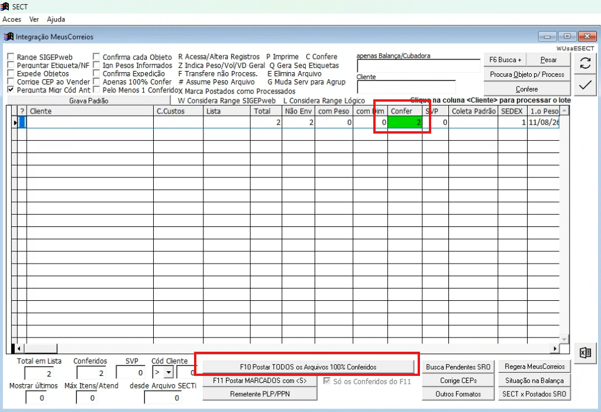
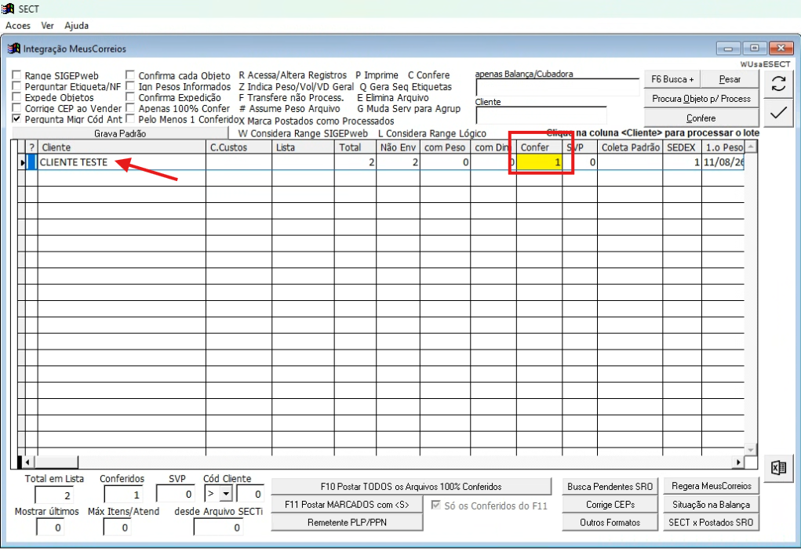
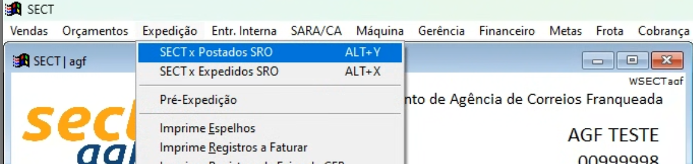
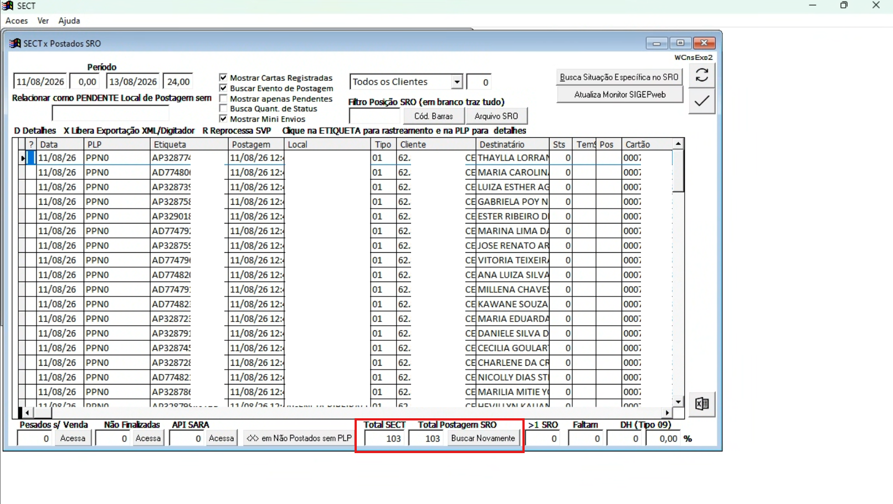
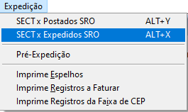

- Confirme que o WS da balança está, no mínimo, em uma versão posterior a 11/08/2026 e que o SECT está na versão 12/06/2026 (D).
- Este é o processo mais rápido, mas exige mais atenção durante a pesagem. Ao validar a pesagem, o objeto é postado diretamente no Correios Atende.
- Se ocorrer uma leitura incorreta depois da validação, não será possível ajustar pelo sistema; será necessário estornar a venda no CA.
- Pese os objetos e realize a venda no CTRL+S conforme o passo 2.
Venda Balança Cubadora SECT
Este passo a passo apresenta o procedimento de venda e expedição dos objetos pela balança cubadora no SECT. Ao final, ficam reunidas as verificações usadas para localizar e tratar eventuais pendências antes do encerramento.
Objetivo: seguir o fluxo de venda de forma organizada e realizar as conferências necessárias para aumentar a segurança das postagens.
Procedimento de Venda
No passo 1, identifique qual das duas formas de pesagem está sendo utilizada e siga a sequência indicada para esse fluxo.
1. Pesagem dos objetos
Existem duas formas de realizar a pesagem. Verifique se a opção PATCH CA no momento da pesagem está ativada ou desativada e siga o fluxo correspondente.
Com PATCH CA no momento da pesagem
Sequência: Passo 1 → Passo 2 → Passo 4 → Passo 5
Sem PATCH CA no momento da pesagem
Com a opção desativada, a balança funciona pelo processo anterior. Nesse fluxo:
- Pese normalmente os objetos.
- Realize a venda no CTRL+S conforme o passo 2.
- Depois da venda, faça a atualização pelo Monitor Retornos Patch/PPN conforme o passo 3.
- Em seguida, prossiga para a conferência em SECT x Postados SRO.
Sequência: Passo 1 → Passo 2 → Passo 3 → Passo 4 → Passo 5
2. Venda no CTRL+S do SECT
- Observe o campo Confer na tela de venda.
- Se o campo estiver verde, use F10 - Postar TODOS os Arquivos 100% Conferidos.

- Se o campo Confer estiver amarelo, ainda faltam objetos daquela lista a serem pesados. Se for necessário vender mesmo assim, clique no nome do cliente para realizar a venda dos objetos conferidos.

3. Atualização do Monitor Retornos Patch/PPN
Depois da venda no CTRL+S, o SECT envia as informações para o Monitor Retornos Patch/PPN, que conversa com o Correios Atende para realizar a venda no PATCH dos Correios. A agência pode forçar uma atualização usando F5 ou o ícone de atualizar.

4. Conferência de Postagens no SECT x Postados SRO
Acesse Expedição → SECT x Postados SRO.

Confira se os valores de Total SECT e Total Postagem SRO estão iguais.

5. Gerar arquivo e realizar a expedição no SROweb
- Após realizar as postagens no Correios Atende, aguarde o retorno da informação POSTADO. Somente com esse retorno será gerado o arquivo de expedição.
- Antes de gerar o arquivo, deixe os rótulos abertos no SROweb.
- Acesse Expedição → SECT x Expedidos SRO ou utilize ALT+X.

- Confirme se todos os objetos possuem numeração preenchida na coluna Pos.
- Clique em Arquivo SRO.

- Com o robô de expedição instalado e configurado, abra o programa e clique em Iniciar Processo.
- O processo será direcionado automaticamente para o SROweb e a leitura dos objetos será iniciada.

Verificações e Tratamento de Pendências
Use esta seção ao final do procedimento ou sempre que houver alguma divergência. As verificações abaixo ajudam a localizar objetos que não seguiram o fluxo normal e indicam como tratar as principais pendências.
1. Avisos e pendências identificados na balança
Objeto “Não Localizado”
Se a balança informar que não foi encontrada nenhuma pré-postagem, puxe o arquivo do MeusCorreios. Se for um objeto de terceiros, solicite ao cliente o ajuste da pré-postagem.

Cartão suspenso, inativo ou cancelado
Entre em contato para informar o problema no contrato. Muitos casos ocorrem por limite de crédito do cliente. Depois que o cliente ajustar a situação, utilize Situação dos Objetos para puxar a PPN e realizar a venda.
2. Objetos pendentes para venda
- Acesse a tela Situação da Balança para verificar se ficaram objetos pendentes para venda.

- Se algum objeto aparecer nessa tela com o campo PLP vazio, significa que a PPN do arquivo não foi puxada.
- Clique em Buscar SVP/PPN para criar o arquivo para venda. É nessa etapa que podem ser importadas as PPNs dos objetos que apresentaram erro durante a pesagem, como cartão suspenso.

3. Pendências no Monitor Retornos Patch/PPN
- O padrão do Monitor é os objetos irem desaparecendo conforme constam como postados no SRO.
- Se algum objeto não desaparecer, ainda pode estar faltando atualização por parte do CA.
- Se o CA estiver com problema, altere Confirmar Postagens no SRO para Confirmar Postagens no API Fornecedor. Assim, o Monitor passa a consultar o CA em vez do SRO.
- Para reprocessar um objeto que ainda não consta como postado no CA, coloque a letra V. O Monitor enviará novamente os dados da postagem daquele objeto.
Checklist Operacional
Marque cada item conforme concluir a etapa.